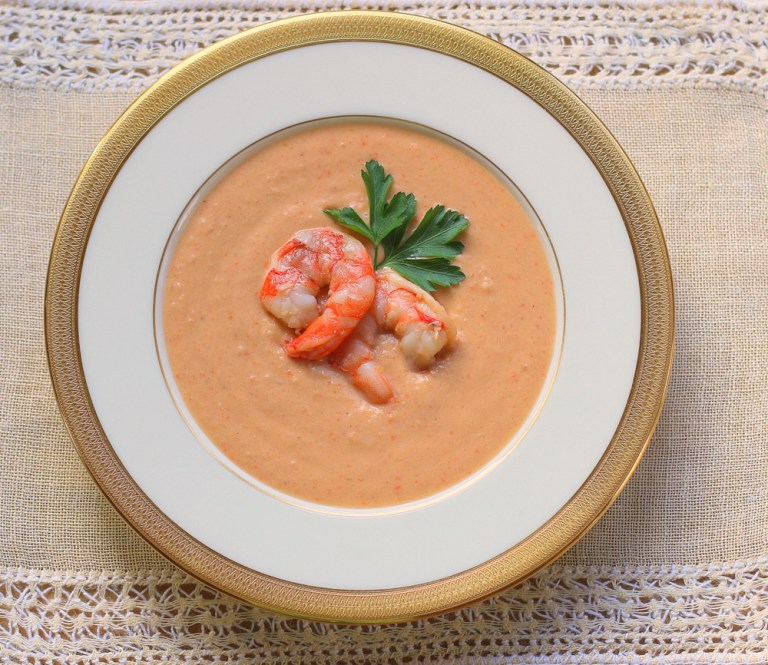
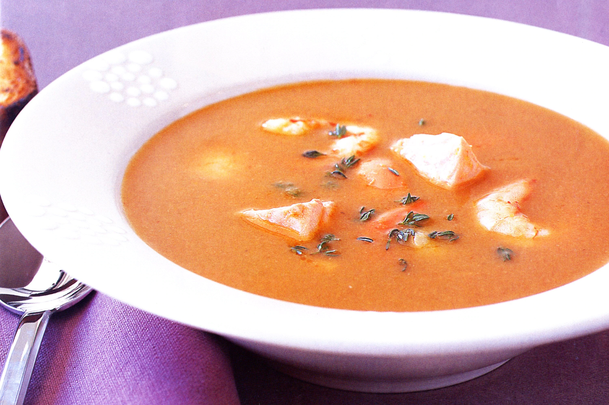
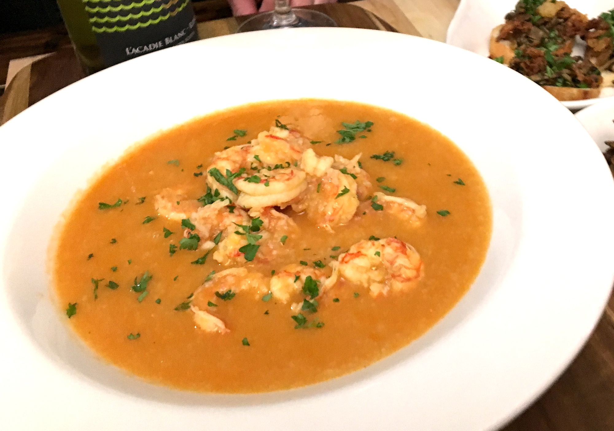

  
For this bisque recipe, sautéing and simmering shrimp shells to
make a quick stock gives this soup a deeper, richer flavor.
Melt 1 tablespoon butter in a large heavy pot over medium-high heat.
Add shrimp shells and cook, stirring frequently, until they begin to brown,
about 5 minutes. Add 1 bay leaf and 8 cups water. Simmer uncovered for 25 minutes.
Set a fine-mesh strainer over a large bowl. Strain, discarding solids.
Melt 1 tablespoon butter in a large heavy pot over medium heat.
Add shrimp and cook, stirring occasionally, until just opaque in center,
3-4 minutes. Transfer shrimp to a plate. Add remaining 2 tablespoons
butter to same pot. Add carrots, celery, and onion and cook over medium
heat, stirring frequently, until very soft, about 20 minutes.
Remove pot from heat; add brandy. Return pot to heat and stir until
almost evaporated, 2-3 minutes. Add rice and tomato paste; stir for 1 minute.
Add shrimp stock, remaining bay leaf, parsley, thyme, and ¼ tsp. cayenne.
Simmer uncovered until flavors meld and rice is soft, about 20 minutes.
Season with salt and pepper. Reserve 4 shrimp for garnish and stir remaining
shrimp into bisque. Remove parsley, thyme, and bay leaf.
Working in batches, purée bisque in a blender until smooth.
Pour through a fine-mesh strainer set over a clean pot.
Discard solids in strainer. Stir in cream and reheat bisque over medium heat.
Add lemon juice. Season to taste with salt, pepper, and more cayenne, if desired.
Mince reserved shrimp and mix with chives in a small bowl.
Place 1 heaping tablespoon shrimp mixture in the center of large,
shallow soup bowls. Ladle bisque around garnish and serve.
Do Ahead: Shrimp stock can be made 3 days ahead. Let cool slightly;
chill uncovered until cold, then cover and keep chilled.
What I learned